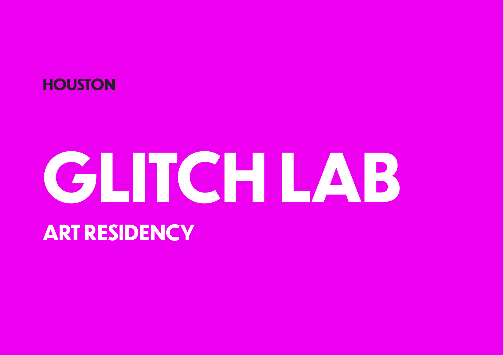

.svg)
Homepage < Archive < Community Engagement < Glitch Lab <
Glitch Lab Art Residency

The Glitch Lab was a social practice art residency developed by the Edgelands Institute and the NOTICE Coalition, in Houston, Texas, merging art, research, and community organising. Over a 5-month period, a diverse range of participants (artists, students, and educators) explored the intersections of surveillance, education, and youth justice. It created a vibrant environment for experimentation and civic engagement, culminating in an art exhibition at the Friends Gallery in Houston. The work focused particularly on disproportionate digital surveillance of minorities and marginalized youth, and on the development of new tools for resistance.
Over the course of five months, the Glitch Lab fostered collaboration, dialogue, and creative resistance, questioning the narratives that position surveillance as a solution to educational challenges. The program highlighted how these technologies often reinforce racialized and ableist systems of control, disproportionately affecting Black, disabled, TLGBQIA+, and other marginalized youth.
By merging art, research, and community organizing, the residency transformed Friends Gallery in Houston, TX into a space of experimentation and civic engagement. Through installations, workshops, sound experiments, and storytelling, participants reimagined how socially engaged art can expose systemic harm while amplifying youth and community voices—offering new ways to envision digital futures grounded in care, equity, and justice. The residency culminated in an art show hosted by Friends Gallery in Houston from October 22 to November 9, 2025, showcasing the works created throughout the program.
Meet the artists and their projects:
Sol Diaz-Peña
Sol Diaz-Peña is a Cuban-Mexican-American transdisciplinary artist, educator, and organizer. Their work moves across painting, photography, and collective practice, drawing from Zapotec Indigenous traditions, queerness, and migration to explore how identity is shaped, remembered, and reclaimed.
Sol’s Glitch Lab Project: Here Forever & Today
Billion Tekleab
Billion Tekleab works through breaking language, sound making, cartographic studies, and performance to make visible the ephemera of Black life, displacement, and the African diaspora.
Billion’s Glitch Lab Project: Border Prayer
Jack Morillo
Jack Morillo is an artist and poet from Houston who facilitates Teen Council at the Contemporary Arts Museum Houston. His work explores the unintended uses of space, disidentification, and the surreal as tools for resistance.
Glitch Lab Project: Opt Out